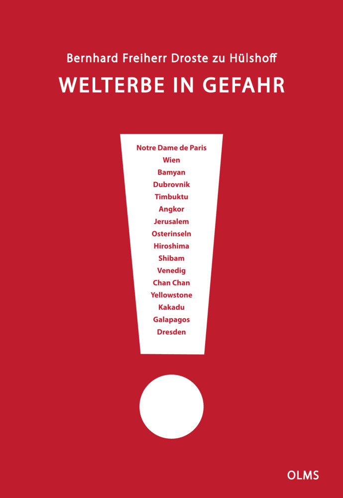

Bernd Freiherr von Droste zu Hülshoff
A life for the world heritage of mankind
Founding director of the UNESCO World Heritage Centre. Forester, ecologist, mediator between nations — and chronicler of 53 endangered sites of our shared heritage.

Founding director of the UNESCO World Heritage Centre. Forester, ecologist, mediator between nations — and chronicler of 53 endangered sites of our shared heritage.

From the first 12 World Heritage sites to today's unmanageable list: Bernhard Freiherr von Droste zu Hülshoff witnessed the rise — and the crisis — of the UNESCO idea at first hand.
In his book, the founding director of the World Heritage Centre takes his readers to 52 places that shape our identity, and tells of their dramatic transformation: through the shift from a rules-based order to a power-obsessed world disorder, through human-induced climate change, and through ruthless economic interests. Whether Venice, Timbuktu, the Great Barrier Reef or the tropical forests of the Amazon — many of these magnificent creations of nature and of humankind stand on the brink.
This book offers exclusive insights into the work behind closed doors. It reveals how the humanitarian idea of a shared heritage became a plaything of the powerful, and what challenges lie ahead. Told authentically, with deep expertise and great feeling, the author opens up new perspectives and reminds us what world heritage truly stands for — beyond its monuments and landscapes. A book that points the way towards what should really matter in our world.
A world map of all properties currently inscribed on UNESCO's List of World Heritage in Danger. Click on a site to learn about its background and the nature of the threat. As of November 2025.
Bernhard Freiherr von Droste zu Hülshoff — known to family and the public simply as Bernd — was born on 17 September 1938 in Essen. He descends from a Westphalian family whose roots reach back more than nine centuries, and which holds an honoured place in German literature through the poet Annette von Droste-Hülshoff. Growing up in Betzdorf, Haus Junkernthal and Adenau, he was shaped from an early age by the world of the forest: his father Mariano was a chief forestry official.
After completing his Abitur at the Aloisiuskolleg in Bad Godesberg (1957) and an apprenticeship year at the Mayen Forestry Office, he studied forestry sciences in Hann. Münden, Vienna and Munich. Practical placements took him as a student to Finland as a log driver, to the forests of Turkey, and to southern Sweden. In 1961 a scholarship brought him to Stellenbosch in South Africa, where he participated in big-game research at Kruger National Park.
After his doctorate (summa cum laude, 1969) and research work at the University of Munich, Droste zu Hülshoff moved to Paris in 1973 to join UNESCO. From "first officer" in the Division of Ecological Sciences, he became its director in 1984 and Secretary of the Man and the Biosphere Programme (MAB) — the programme from which the worldwide network of biosphere reserves emerged.
In 1992 he proposed merging the previously separate secretariats for natural and cultural world heritage. UNESCO Director-General Federico Mayor followed the proposal — and Droste zu Hülshoff became founding director of what is today the world-renowned World Heritage Centre, as well as Secretary-General of the World Heritage Convention. In 1998 UNESCO elevated him to the rank of Assistant Director-General (ADG).
In parallel with building up the Centre, Droste zu Hülshoff created the publishing instruments that carried the world heritage idea across the globe. From 1996 onwards he served as founding editor of the bi-monthly journal World Heritage, today published in English, French and Spanish with a worldwide circulation of around 50,000 copies. From the year 2000 his successor Francesco Bandarin continued the publication.
In the 1990s, together with colleagues at the World Heritage Centre, UNESCO's Education Sector and the Norwegian National Commission for UNESCO, he conceived the educational kit World Heritage in Young Hands. The work has been translated into 43 languages and adopted in schools across 130 countries. He secured the funding from Rhône-Poulenc and the Norwegian government.
Earlier still — in the 1980s and 1990s — he was editor of the trilingual journal Nature & Resources, which reached a circulation of over 20,000 copies.

Since his retirement in 1999 he has worked as an expert, advisor and mediator for UNESCO, IUCN, the European Commission and the World Bank. He has travelled to more than 100 countries, often as team leader on missions reviewing the state of conservation of World Heritage sites. His mandates have included the Galápagos Islands, the protection of Petra in Jordan, the Upper Middle Rhine Valley cultural landscape and the pilgrimage routes of the Kii Peninsula in Japan.

As an honorary professor he taught at the Viadrina European University, as a visiting professor at the Brandenburg University of Technology, and at Beijing's elite universities Peking and Tsinghua. Droste zu Hülshoff works in German, English, French and Spanish.
For enquiries about lectures, interviews, expert reports or the book, please use the form opposite. For press and publishing enquiries you are welcome to contact the secretariat directly by email.